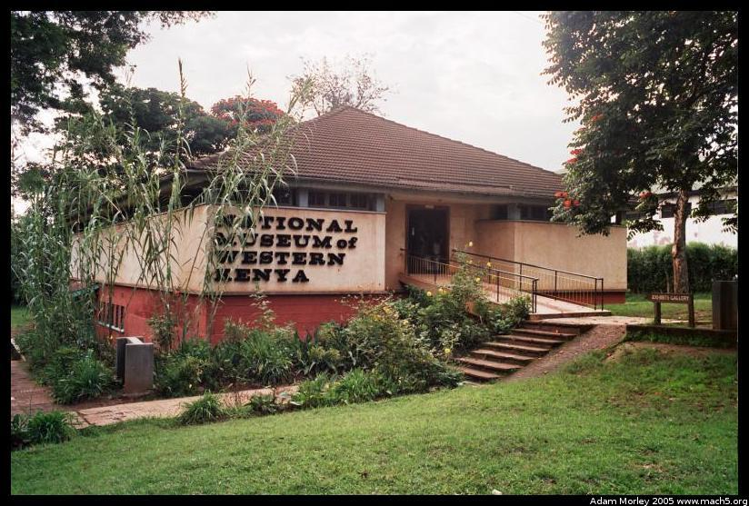

Kitale is a town north of Bungoma, famous for its museum and a nearby park, the Saiwa Swamp National Park. Lake Turkana and Mount Elgon are near Kitale. Lake Turkana was made famous for most people by the movie The Constant Gardener. A good film, and worth seeing. It's actually an adaptation of a book. Lake Turkana is also famous for fossilized evidence of the evolution of modern humans.
I, as usual, took a matatu to Kitale. The ride was quite eventful too --- broken door, ran out of gas, termites, etc. Ask me sometime. It's a funny story.
The National Museum of Western Kenya. One of my favorite museums in Kenya, in part for its collection, and because of its location.
A traditional Luhya homestead. The large house is for the husband and first wife, while the smaller house is for the second wife. The fence made of branches is used to keep animals out of the compound.
A Nandi homestead, and a Luo homestead. Each tribe has different traditions for the number of houses and the organization of the houses. For example, some homesteads have room for multiple wives, fathers, sons, adult boys and so forth. The traditional homestead layout was no longer common where I lived, but the museums attempted to portray history. There was also a British homestead, complete with fireplace *in* the mud house.

It seems like every museum I went to in Kenya had a crocodile pit. This one, however, had a sign over the croc that said, "WARNING: These animals are friendly, but can be DANGEROUS." Naturally, the fence was quite low, and had some holes in it. Quite easy to get your fingers bit off.
On my way back from Kitale, I saw these three children by the side of the road watching the cars go by.
And this well-used truck, and marketplace.
The story of my return is almost as exciting as the trip to Kitale. It is, however, best told in person. It involves seven matatus (it was getting late), one botched taxi ride, and one boarding-of-a-matatu-in-motion followed by riding in the doorway.
Adam can be reached at adam dot morley at gmail dot com